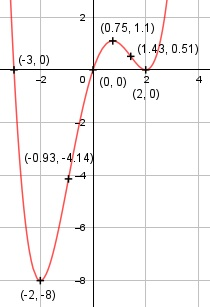

Aufgabe 48 f(x) = 0,25x4 - 0,25x3 - 2x2 + 3x f'(x) = x3 - 0,75x2 - 4x, f''(x) = 3x2 - 1,5x - 4 f'''(x) = 6x - 1,5 Definitionsbereich: -∞ < x < ∞ Wertebereich: -8 ≤ f(x) < ∞ Asymptoten: - Symmetrie: - Nullstellen: 0,25x4 - 0,25x3 - 2x2 + 3x = 0 0,25x * (x3 - x2 - 8x + 12) = 0 0,25x = 0 |:0,25 x1 = 0 x3 - x2 - 8x + 12 = 0 Durch Probieren gefunden x = 2 Hornerschema: 1 -1 - 8 12 x2 = 2 2 2 -12 ------------------------ 1 1 -6 0 Polynomdivision: x3 - x2 - 8x + 12 : (x - 2) = x2 + x - 6 -(x3 - 2x2) ------------ x2 - 8x + 12 -(x2 - 2x) ----------- -6x + 12 -(-6x + 12) ------------ 0 x2 + x - 6 = 0 p, q - Formel: p = 1, q = -6 x3,4 = x3,4 = -0,5 ± x3,4 = -0,5 ± x3,4 = - 0,5 ± 2,5 x3 = 2 (Berührpunkt, Extrempunkt) x4 = -3 N1,2(2|0), N3(0|0), N4(-3|0) Schnittpunkt mit der y-Achse: f(0) = 0,25 * 04 - 0,25 * 03 - 2 * 02 + 3 * 0 = 0 Sy(0|0) Extrempunkte: x3 - 9x2 + 18x = 0 x3 - 0,75x2 - 4x + 3 = 0 Wegen Berührpunkt x1 = 2 Hornerschema: 1 -0,75 -4 3 x1 = 2 2 2,5 -3 --------------------------- 1 1,25 -1,5 0 Polynomdivision: x3 - 0,75x2 - 4x + 3 : (x - 2) = x2 + 1,25x - 1,5 -(x3 - 2x2) ------------ 1,25x2 - 4x + 3 -(1,25x2 - 2,5x) --------------- -1,5x + 3 -(-1,5x + 3) ------------- 0 x2 + 1,25x - 1,5 = 0 p, q - Formel: p = 1,25, q = -1,5 x2,3 = x2,3 = -0,625 ± x2,3 = -0,625 ± x2,3 = -0,625 ± 1,375 x2 = -2 f(-2) = 0,25 * (-2)4 - 0,25 * (-2)3 - -2 * (-2)2 + 3 * (-2) = -8 x3 = 0,75 f(0,75) = 0,25 * (0,75)4 - 0,25 * (0,75)3 - -2 * (0,75)2 + 3 * (0,75) = 1,1 f''(2) = 3 * 22 - 1,5 * 2 - 4 > 0 --> Tiefpunkt (2|0) f''(-2) = 3 * (-2)2 - 1,5 * (-2) - 4 > 0 --> Tiefpunkt (-2|-8) f''(0,75) = 3 * 0,752 - 1,5 * 0,75 - 4 < 0 --> Hochpunkt (0,75|1,1) Wendepunkt: 3x2 - 1,5x - 4 = 0 A, B, C - Formel: A = 3, B = -1,5, C = -4 x1,2 = x1,2 = x1,2 = 1,5 ± 7,09 x1,2 = ------------- 6 x1 = 1,43 f(1,43) = 0,25 * (1,43)4 - 0,25 * (1,43)3 - - 2 * (1,43)2 + 3 * (1,43) = 0,51 x2 = -0,93 f(-0,93) = 0,25*(-0,93)4 - 0,25*(-0,93)3 - - 2*(-0,93)2 + 3*(-0,93) = - 4,14 f'''(1,43) = 6 * 1,43 - 1,5 ≠ 0 --> Wendepunkt (1,43|0,51) f'''(-0,93) = 6 * (-0,93) - 1,5 ≠ 0 --> Wendepunkt (-0,93|-4,14) Graph:
